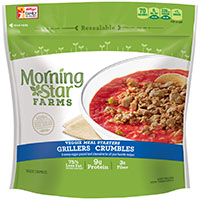
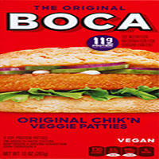
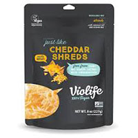
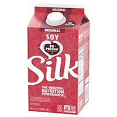
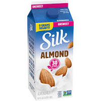
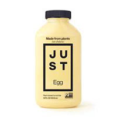

Transitioning diets can be difficult, especially if you are unaware of where to start. We have compiled a list full of popular and top rated items to help get you started. This information includes the brand's website, where you cna also find nutritional information, where to buy, and more. As with all foods, each brand and company makes their product a little bit difficult. These are simply recomendations, however it may take a while to find a brand or product that you truly enjoy. Be patient with yourself, each animal-free meal helps!
Beefless Ground

Chik'n Patty

Shredded Cheddar Cheese
Silk Soy Milk

Almond Milk

Eggs